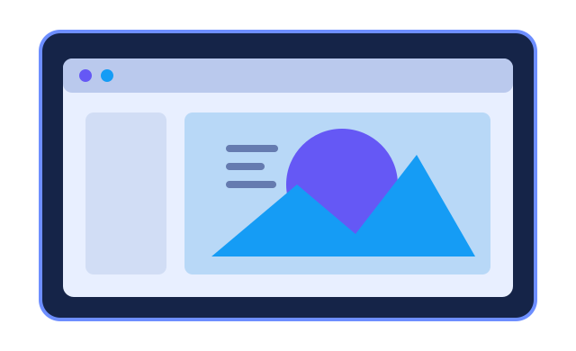

Визуальное оформление
Работа с цветами, шрифтами, формами, изображениями и шаблонами.
Эти инструменты используются для создания и обработки визуальной и аудиовизуальной информации: иллюстраций, схем, рекламных макетов, презентаций, видеороликов и других материалов.
Онлайн-редакторы предоставляют готовые шаблоны, наборы элементов и инструменты редактирования. С их помощью можно создавать материалы даже без профессиональных навыков дизайна. Важно учитывать авторские права на фотографии, музыку, шрифты и другие материалы.

Сервис для создания презентаций, плакатов, публикаций для социальных сетей, инфографики и других визуальных материалов. Предлагает шаблоны, текстовые и графические элементы.
Онлайн-инструмент для проектирования интерфейсов, макетов сайтов и приложений. Поддерживает совместную работу над дизайном и обмен комментариями.
Видеоредактор, который позволяет собирать ролики, обрезать фрагменты, добавлять текст, переходы, звук и экспортировать готовое видео.
Работа с цветами, шрифтами, формами, изображениями и шаблонами.
Обрезка видео, настройка звука, добавление надписей и эффектов.
Сохранение материалов в распространённых форматах и отправка готовых работ.